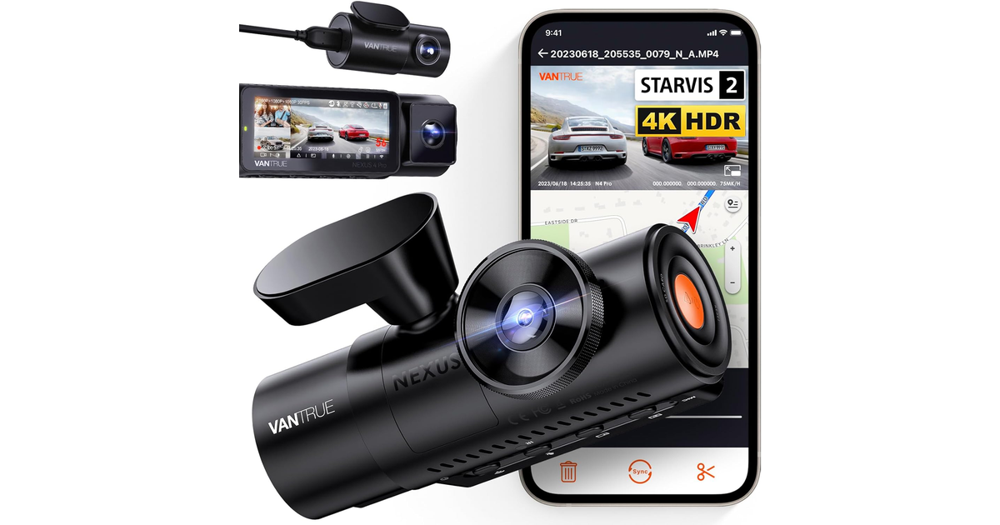

Vantrue N4 Pro Dash Cam, STARVIS, Buffered Parking Mode
Check price on AmazonPrices change, check the live price on Amazon before buying.
A 3-channel dash cam that records the road ahead, the car interior and the rear at the same time. Built for rideshare drivers and anyone who wants complete evidence after an accident or a parking incident, with strong night vision from Sony STARVIS 2 sensors.
Who it is for: Rideshare drivers and anyone who wants front, cabin and rear recording at the same time, with strong night vision.
Who should skip it: Skip it if you only need a simple front-only camera. This is a 3-channel system, and parking mode needs a hardwire kit.
Key features
- 4K front camera with Sony STARVIS 2 IMX678 sensor and 4K HDR.
- 1080P interior camera with 4 infrared LEDs, plus 1080P rear camera.
- Buffered parking mode records 10 seconds before and 30 seconds after motion or impact (hardwire kit required).
- Built-in GPS, 5GHz Wi-Fi, hands-free voice control, supports up to 512GB microSD.
- Supercapacitor power supply for heat resistance.
FAQs
How many cameras does it have?
Three channels record at once: a 4K front camera, a 1080P interior camera with infrared LEDs and a 1080P rear camera.
Does parking mode need anything extra?
Buffered parking mode records 10 seconds before and 30 seconds after motion or impact, and it needs a hardwire kit.
How much storage does it support?
Up to a 512GB microSD card, with built-in GPS, 5GHz Wi-Fi and voice control.